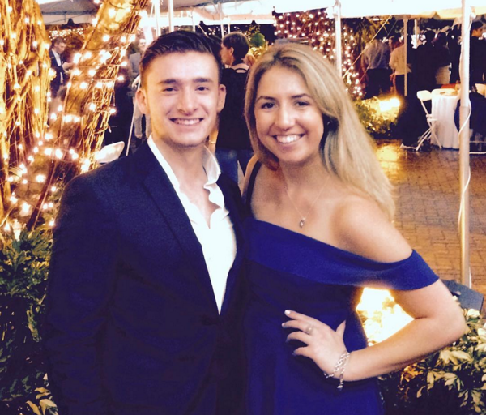
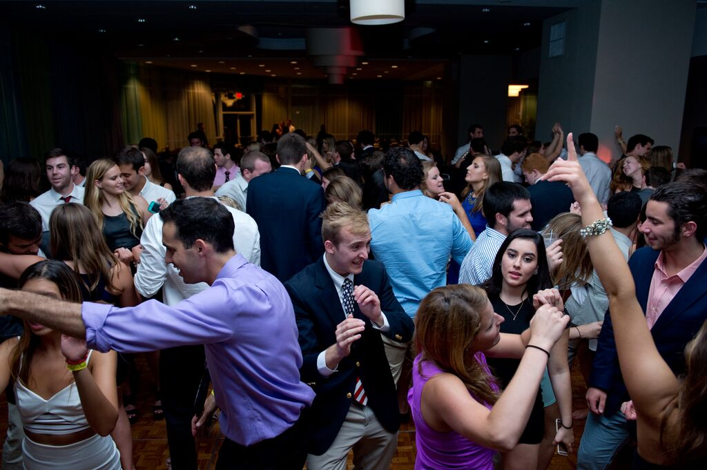

Event Planning | Alpha Delta Pi
As the Director of Social Enrichment for Alpha Delta Pi, I have served on our Executive Board for one year and had the responsibility of planning and hosting events for the Gamma Delta Chapter at the University of Miami. I have had experience working with venues to plan and host events for crowds of 150 to 300 people. The planning process is extensive and requirements include hiring off duty police officers, organizing food and catering, setting up decorations, brigning in DJs/photographers and organizing buses. The position also entails coordinating dates with fraternity social chairs and working within a $21,000 budget.
My passion for event planning truly stemmed from my term as social chair. I've always been drawn to weddings and the unique style that contributes to every wedding planner's success. Someday, I hope to use the inspiration I have gained from other event planners to create my own memorable events.
Here are a couple of photos from events I have planned during the past year!
 